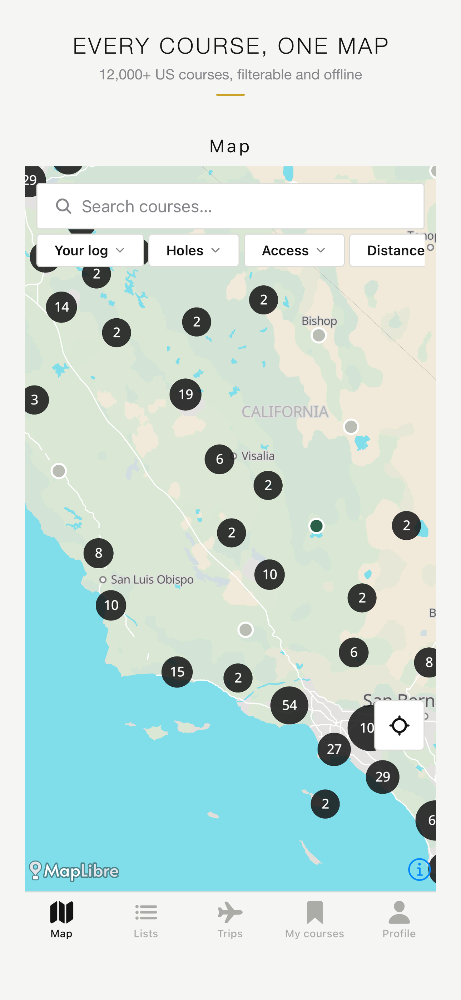
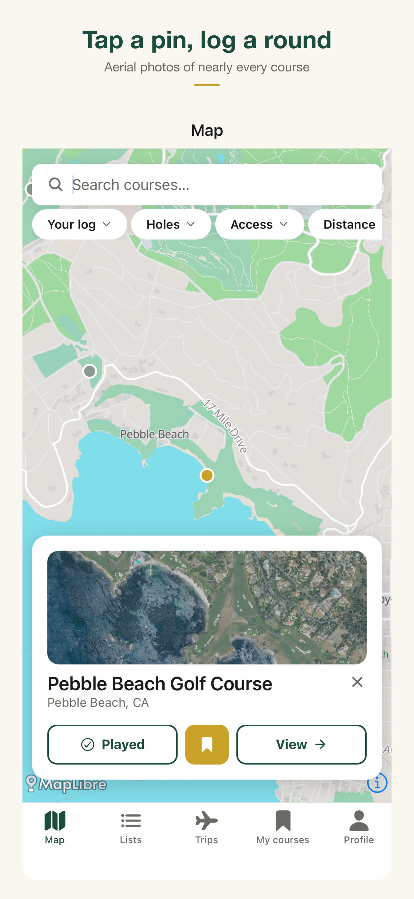
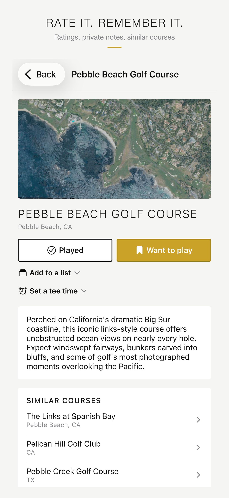
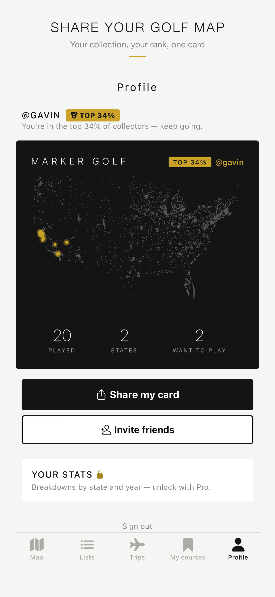
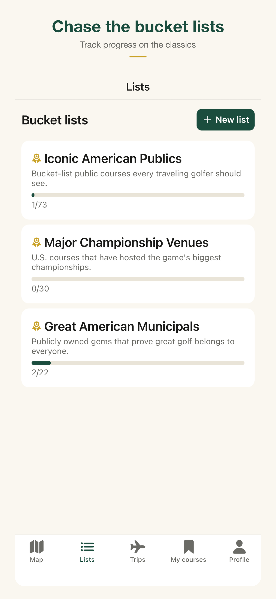

Marker
Golf course explorer and trip planner.
Every golf course in the United States on one map — 12,640 of them. Log the ones you've played, rate them, keep bucket lists, and plan a golf trip in one place instead of across twenty tabs.
The whole country, filtered live
Real data · 12,640 pointsNo tile server, no geocoding call, nothing metered. The state outlines are one 111 KB static file and every dot is a real course from the same dataset the app bundles, both projected and filtered in the browser — which is exactly how the phone does it.
In the app
iPhone · 6.9″




What it does
Every course, one map
12,640 US courses with an aerial photo of nearly every one. Filter by holes, access and distance; search by course or by town. Pins ship with the app and cluster on the device, so the map works with no network.
A log worth keeping
Mark courses played or want-to-play in a tap, rate out of 10, keep private notes. Your played courses become a map you can share, with a collector rank attached.
Bucket lists
Curated lists — iconic American publics, major venues — plus your own. Progress is tracked against the same log, so nothing is entered twice.
Trips, planned with friends
Day-by-day itineraries you can plan together. Invite friends with a code; everyone sees and edits the same plan, with tee-time reminders 24 hours and 4 hours out.
A planner that declines
Ask for Wisconsin in January and it says no, and tells you the courses there usually play April to October. The refusal is computed from stored season data, not from the model's opinion.